Documento produzido a partir do repositório e do ambiente local de desenvolvimento, com capturas reais de execução.
Este portfólio reúne as 16 tarefas da disciplina em um único documento. Cada capítulo retoma o objetivo original da tarefa, lista o que foi efetivamente entregue, apresenta evidências capturadas do repositório e do sistema em execução e fecha com a tabela de critérios e, quando necessário, uma nota de adaptação.
As dezesseis tarefas escritas originalmente para Xano e FlutterFlow foram atendidas com a stack realmente usada no projeto: monorepo Django + React, versionado no GitHub, com especificação em OpenSpec. Nenhuma captura de tela foi simulada, desenhada ou editada; as imagens vêm de execução local do sistema, do editor, do navegador e do GitHub.
| Camada | Tecnologia |
|---|---|
| Backend | Python 3.14.10 (venv do projeto) + Django 5.2.17 |
| API | Django REST Framework 3.18.0 + drf-spectacular (OpenAPI 3.0) |
| Banco | PostgreSQL 16 em produção; SQLite via DB_ENGINE=sqlite na execução local |
| Frontend | React 19.2.8 + TypeScript 7.0.2 + Vite 8.3.8 |
| Estilo | Tailwind CSS 4.3.3 + Lucide React 1.37.0 |
| Especificações | OpenSpec 1.14.3 (spec-driven) |
| Ferramentas | Git 2.56.0, Node 26.13.1, npm 11.20.0, VS Code 1.146.0 |
| Status | Significado |
|---|---|
| Atendido | O critério foi cumprido com a mesma ferramenta ou equivalente direto, com evidência no documento. |
| Atendido por equivalente | O objetivo foi cumprido com ferramenta diferente da citada na tarefa original. |
| Parcial | Parte do critério está cumprida; a pendência está descrita no capítulo. |
| Não aplicável | A ferramenta citada não é usada no projeto; o equivalente está documentado. |
Configurar o Git na máquina, criar a conta no GitHub e publicar o primeiro repositório do projeto da disciplina.
Erick Jonathan / erick.jonathan@aluno.impacta.edu.br).ErickJV/edutrack com README, Makefile, .env.example e as pastas backend/, frontend/, openspec/, docs/ e scripts/.2e55d66, 2026-09-01) e o último (aa94981, 2026-11-17).main) sincronizada com origin/main.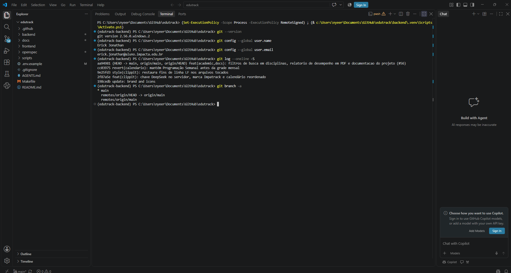
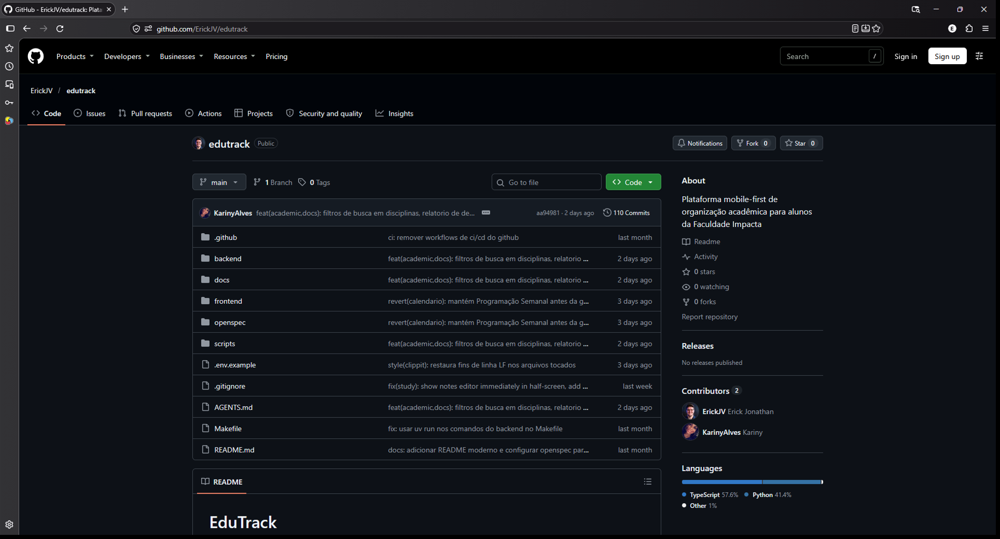
$ git --version git version 2.56.0.windows.2 $ git config --global user.name Erick Jonathan $ git config --global user.email erick.jonathan@aluno.impacta.edu.br $ git log --oneline -15 aa94981 feat(academic,docs): filtros de busca em disciplinas, relatorio de desempenho em PDF e documentacao do projeto (#56) cc03975 revert(calendario): mantém Programação Semanal antes da grade mensal 9e25fd3 style(clippit): restaura fins de linha LF nos arquivos tocados 2f87a5e feat(clippit): chave DeepSeek no servidor, marca Impatrack e calendário reordenado 198cedb update: brand and icons fdaff9e chore(openspec): arquivar changes concluídos 51d8e28 docs(openspec): archive perfil-configuracoes-e-dependabot 7c40c51 feat(profile): add account settings, data export and deletion 3d70f8c Merge pull request #52 from ErickJV/dependabot/pip/backend/gunicorn-27.0.1 6f1f84e Merge pull request #50 from ErickJV/dependabot/pip/backend/django-allauth-65.22.1 e51b899 Merge pull request #51 from ErickJV/dependabot/pip/backend/ruff-0.17.5 864c4e4 build(deps-dev): bump ruff from 0.16.6 to 0.17.5 in /backend 77b605e Merge pull request #48 from ErickJV/dependabot/pip/backend/mypy-2.4.1 483f0ea build(deps-dev): bump mypy from 1.18.2 to 2.4.1 in /backend 845a4cc Merge pull request #53 from ErickJV/dependabot/npm_and_yarn/frontend/vite-8.3.8 $ git branch -a * main remotes/origin/HEAD -> origin/main remotes/origin/main
| Critério original | Evidência neste projeto | Status |
|---|---|---|
| Git instalado e com identidade configurada | git --version 2.56.0.windows.2 e git config --global com e-mail institucional | Atendido |
| Conta no GitHub com repositório do projeto | Repositório público ErickJV/edutrack | Atendido |
| Primeiro commit publicado com push | 2e55d66 em 2026-09-01, visível no histórico da branch main | Atendido |
| README descrevendo o projeto | README.md com stack, funcionalidades e comandos de execução | Atendido |
Instalar o VS Code, o Node.js e as extensões de apoio, habilitando assistência de IA no editor para acelerar o desenvolvimento.
AGENTS.md e o contrato de openspec/config.yaml.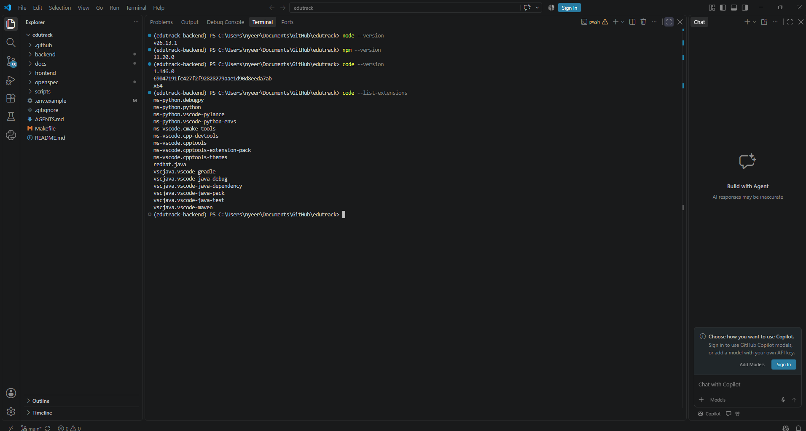
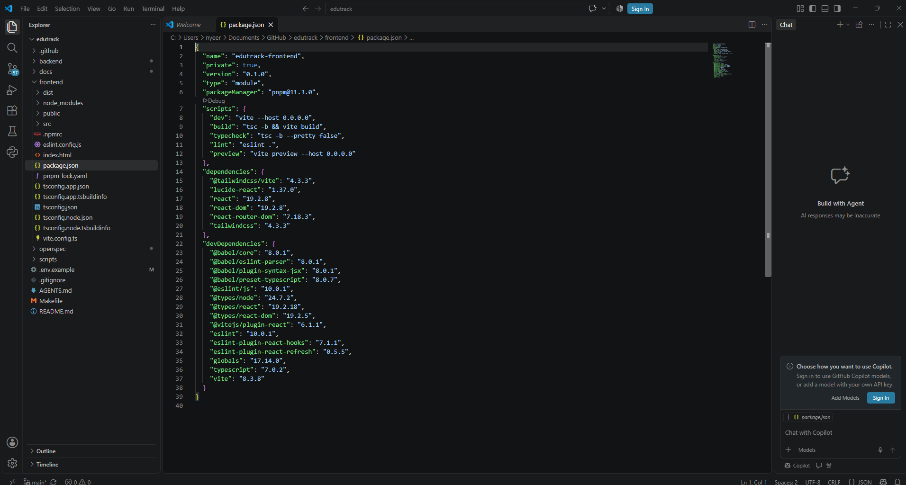
$ node --version v26.13.1 $ npm --version 11.20.0 $ code --version 1.146.0 69047191fc427f2f92828279aae1d90d8eeda7ab x64 $ code --list-extensions ms-python.debugpy ms-python.python ms-python.vscode-pylance ms-python.vscode-python-envs ms-vscode.cmake-tools ms-vscode.cpp-devtools ms-vscode.cpptools ms-vscode.cpptools-extension-pack ms-vscode.cpptools-themes redhat.java vscjava.vscode-gradle vscjava.vscode-java-debug vscjava.vscode-java-dependency vscjava.vscode-java-pack vscjava.vscode-java-test vscjava.vscode-maven
| Critério original | Evidência neste projeto | Status |
|---|---|---|
| VS Code instalado e em uso | code --version 1.146.0 e captura do editor com o projeto aberto | Atendido |
| Node.js instalado | node --version v26.13.1 e npm 11.20.0 | Atendido |
| Extensões de linguagem instaladas | code --list-extensions lista Python, Pylance, C/C++ e Java | Atendido |
| Assistência de IA no fluxo de trabalho | Uso de agente/CLI sobre o repositório com AGENTS.md e OpenSpec | Atendido por equivalente |
| Extensões Gemini Code Assist e XanoScript | Não constam na lista de extensões instaladas; não foram usadas | Não aplicável |
Instalar e configurar o OpenSpec no repositório, criando a estrutura de especificações que orienta cada mudança antes da implementação.
openspec/config.yaml, openspec/specs/ e openspec/changes/ versionada no repositório.openspec/changes/archive/ e 6 em andamento em openspec/changes/.AGENTS.md na raiz descrevendo o fluxo Explorar → Propor → Implementar → Arquivar.openspec validate --all executado sobre o repositório inteiro: 23 itens aprovados, 0 falhas.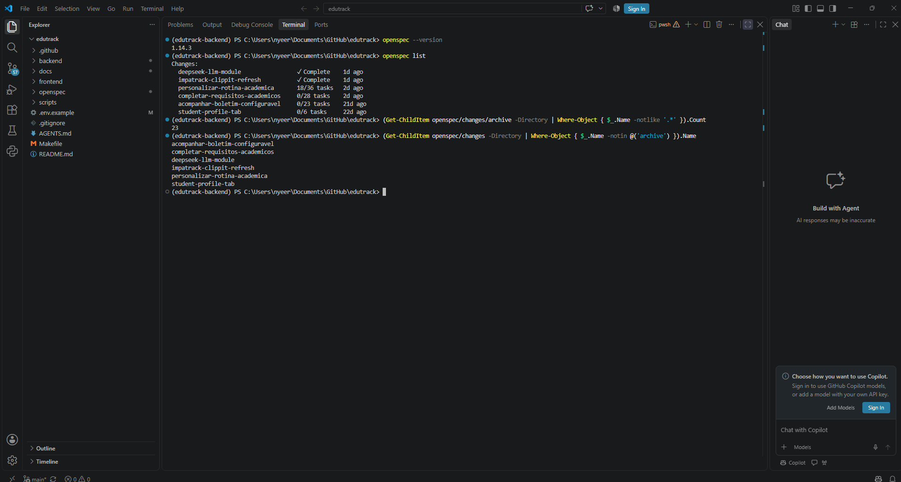
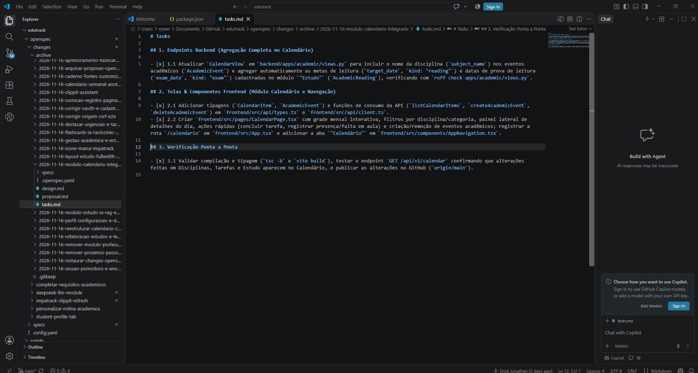
$ openspec --version 1.14.3 $ openspec list Changes: deepseek-llm-module ✓ Complete 1d ago impatrack-clippit-refresh ✓ Complete 1d ago personalizar-rotina-academica 18/36 tasks 2d ago completar-requisitos-academicos 0/28 tasks 2d ago acompanhar-boletim-configuravel 0/23 tasks 21d ago student-profile-tab 0/6 tasks 22d ago $ find openspec -maxdepth 2 -type f openspec/config.yaml openspec/specs/.gitkeep $ ls openspec/changes/archive | grep -v '^\.' | wc -l 23
| Critério original | Evidência neste projeto | Status |
|---|---|---|
| OpenSpec instalado | openspec --version 1.14.3 | Atendido |
| Estrutura de especificações criada | openspec/{changes,specs,config.yaml} versionados | Atendido |
| Especificações validadas | openspec validate --all: 23 aprovados, 0 falhas | Atendido |
| Documento de contexto para agentes | AGENTS.md na raiz com o fluxo OpenSpec | Atendido por equivalente |
openspec/AGENTS.md e openspec/project.md, arquivos das versões iniciais do OpenSpec. A versão 1.14.3 organiza o contexto em openspec/config.yaml e mantém o documento de diretrizes em AGENTS.md na raiz. O equivalente está presente e validado.Modelar as tabelas do sistema em uma ferramenta de backend e manter essa definição versionada, em vez de configurá-la apenas por interface.
backend/apps/academic/models.py (Subject, StudentSubject, AcademicTask, AcademicEvent, StudyNote, Flashcard) e versionados com o projeto.academic, de 0001_initial a 0014_rename_summary_ai_studydocument_analysis_cache_and_more./api/v1/ e documentado via OpenAPI em /api/schema/ e /api/docs/.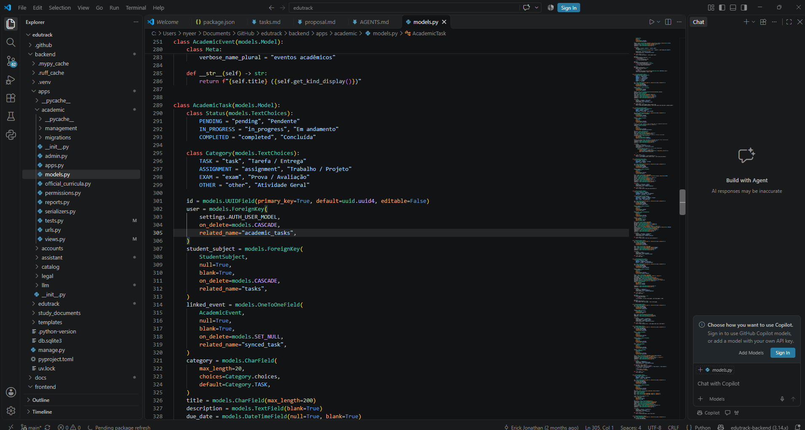
$ python manage.py showmigrations academic academic [X] 0001_initial [X] 0002_seed_curriculum [X] 0003_sync_impacta_official_curriculum [X] 0004_studentsubject_custom_workload_hours [X] 0005_professor_studentsubject_professor [X] 0006_migrate_legacy_professor_names [X] 0007_academicevent_academicterm_and_more [X] 0008_studyfolder_studynote [X] 0009_academicreading_studynote_reading_readinglog [X] 0010_classoccurrence_attendance_and_origin [X] 0011_flashcard [X] 0012_academictask_all_day_academictask_category_and_more [X] 0013_studydocument_studyquiz_studydocumentpage [X] 0014_rename_summary_ai_studydocument_analysis_cache_and_more
| Critério original | Evidência neste projeto | Status |
|---|---|---|
| Tabelas definidas de forma declarativa | models.py com as classes de domínio acadêmico | Atendido por equivalente |
| Definição versionada no Git | models.py e apps/academic/migrations/ no repositório | Atendido |
| Histórico de evolução do schema | showmigrations academic com 0001 a 0014 aplicadas | Atendido |
| Ferramenta Xano | Projeto não usa Xano; o backend é Django + DRF | Não aplicável |
Trabalhar em branch separada e integrar a main por pull request revisado, mantendo histórico verificável.
c962e9c (busca, script de progresso e relatório) e d30cecb (AGENTS.md e referências).main com PRs de dependências e merges rastreáveis; localmente apenas a branch main é mantida.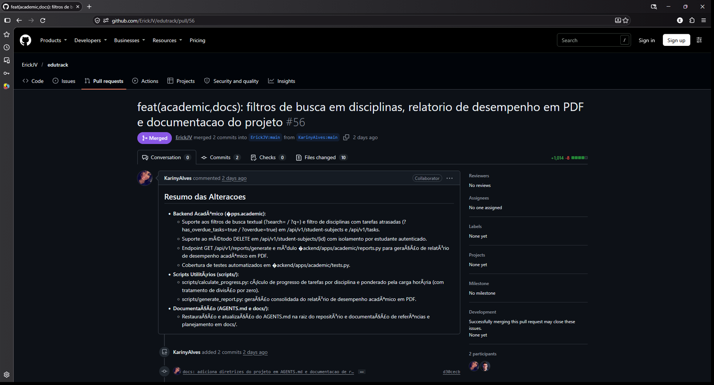
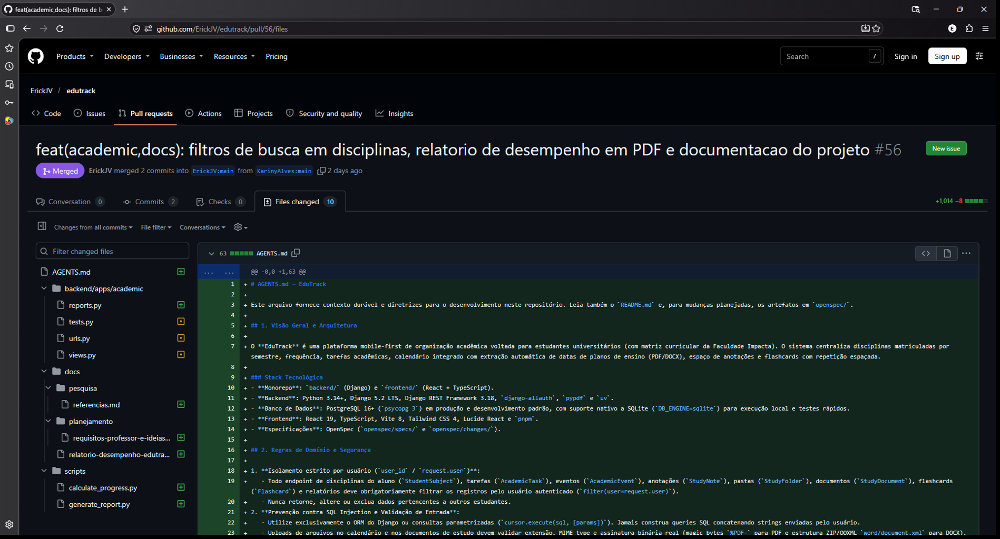
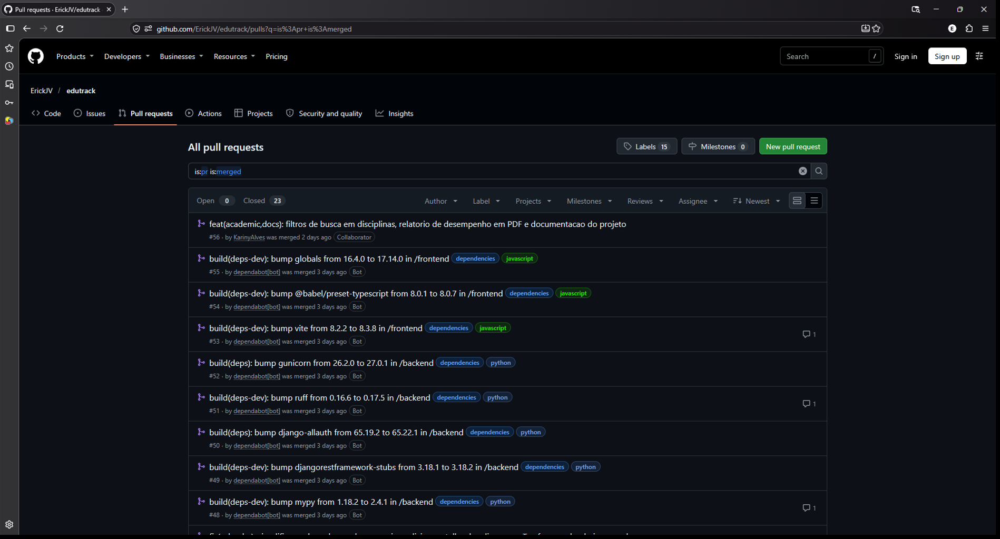
$ git log --merges --oneline -10 3d70f8c Merge pull request #52 from ErickJV/dependabot/pip/backend/gunicorn-27.0.1 6f1f84e Merge pull request #50 from ErickJV/dependabot/pip/backend/django-allauth-65.22.1 e51b899 Merge pull request #51 from ErickJV/dependabot/pip/backend/ruff-0.17.5 77b605e Merge pull request #48 from ErickJV/dependabot/pip/backend/mypy-2.4.1 845a4cc Merge pull request #53 from ErickJV/dependabot/npm_and_yarn/frontend/vite-8.3.8 7d219f7 Merge pull request #49 from ErickJV/dependabot/pip/backend/djangorestframework-stubs-3.18.2 ad71161 Merge pull request #54 from ErickJV/dependabot/npm_and_yarn/frontend/babel/preset-typescript-8.0.7 9ac8a6e Merge pull request #55 from ErickJV/dependabot/npm_and_yarn/frontend/globals-17.14.0 ffe81fd Merge pull request #47 from KarinyAlves/main 4d2819a Merge branch 'main' of https://github.com/ErickJV/edutrack $ git log --oneline -5 aa94981 feat(academic,docs): filtros de busca em disciplinas, relatorio de desempenho em PDF e documentacao do projeto (#56) cc03975 revert(calendario): mantém Programação Semanal antes da grade mensal 9e25fd3 style(clippit): restaura fins de linha LF nos arquivos tocados 2f87a5e feat(clippit): chave DeepSeek no servidor, marca Impatrack e calendário reordenado 198cedb update: brand and icons
| Critério original | Evidência neste projeto | Status |
|---|---|---|
| Mudança feita fora da main e integrada por PR | PR #56 com branch de origem KarinyAlves/main | Atendido |
| PR revisado e mergeado | Selo Merged em 2026-11-17 atribuído a ErickJV | Atendido |
| Histórico limpo e verificável | git log --merges mostra os merges de PRs na main | Atendido |
| Branch release/final-delivery | Não existe no repositório; a entrega é feita fora do Git | Parcial |
Pesquisar referências de interface para o app e registrar o que cada uma ensina, antes de desenhar telas.
docs/pesquisa/referencias.md com três referências analisadas: Notion (dashboard acadêmico), TickTick/Todoist (gestão de tarefas) e AnkiWeb/RemNote (repetição espaçada).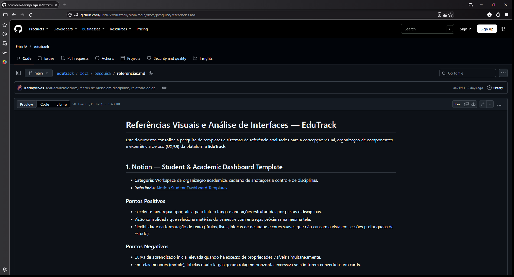
docs/pesquisa/referencias.md
1. Notion — Student & Academic Dashboard Template
https://www.notion.so/templates/category/school
2. TickTick / Todoist — Academic & Task Planner
https://todoist.com/templates/category/education
3. AnkiWeb / RemNote — Spaced Repetition & Flashcards
| Critério original | Evidência neste projeto | Status |
|---|---|---|
| Pesquisa registrada em documento | docs/pesquisa/referencias.md com 3 referências | Atendido |
| Análise crítica (positivos e negativos) | Cada referência tem as duas listas preenchidas | Atendido |
| Aplicação prática no produto | Seção «Aplicação no EduTrack» em cada referência | Atendido |
| Dois templates Figma | Não foram usados; a pesquisa foi feita em produtos públicos | Não aplicável |
Configurar o projeto de frontend, tema e navegação, com as telas principais conectadas ao backend.
https://impatrack.dev, consumindo a API em /api/v1/.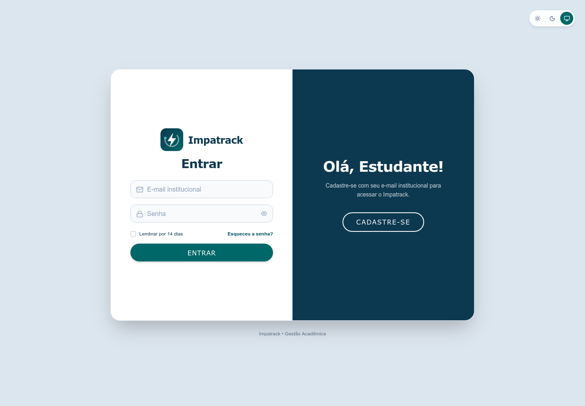
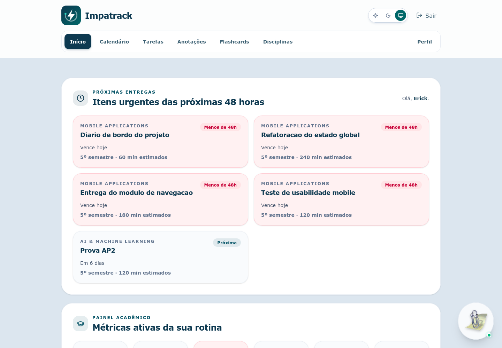
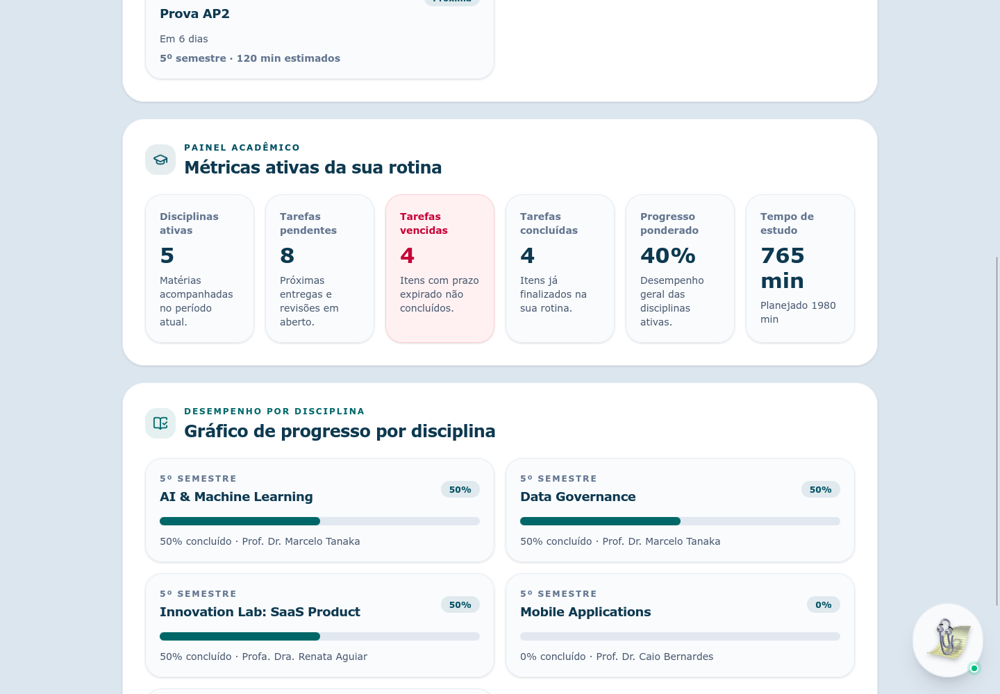
"name": "edutrack-frontend"
"dependencies": {
"@tailwindcss/vite": "4.3.3",
"lucide-react": "1.37.0",
"react": "19.2.8",
"react-dom": "19.2.8",
"react-router-dom": "7.18.3",
"tailwindcss": "4.3.3"
},
"devDependencies": {
"typescript": "7.0.2",
"vite": "8.3.8"
}
| Critério original | Evidência neste projeto | Status |
|---|---|---|
| Projeto de frontend configurado | package.json com React 19.2.8, Vite 8.3.8 e Tailwind 4.3.3 | Atendido |
| Tema e identidade aplicados | Capturas de login e home com a marca e as cores do produto | Atendido |
| Navegação entre as telas | Barra com Início, Calendário, Tarefas, Anotações, Flashcards, Disciplinas e Perfil | Atendido |
| Integração com o backend | Consumo de /api/v1/ com sessão autenticada | Atendido |
| Ferramenta FlutterFlow | Frontend implementado em React; FlutterFlow não foi usado | Não aplicável |
Escrever a primeira proposta de mudança no OpenSpec, descrevendo problema, escopo e impacto antes de implementar.
2026-11-16-gestao-academica-e-estudos com proposal.md, design.md, tasks.md, specs/ e .openspec.yaml.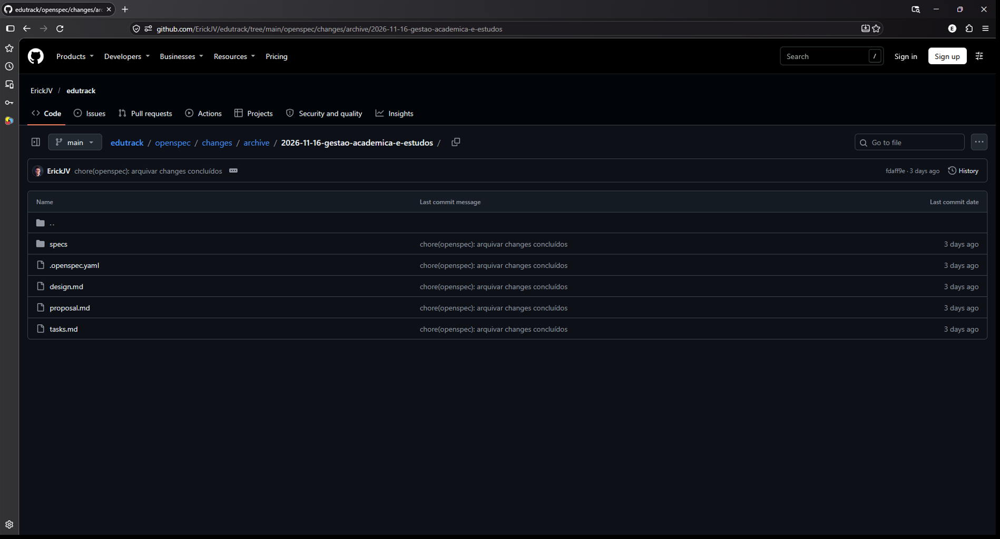
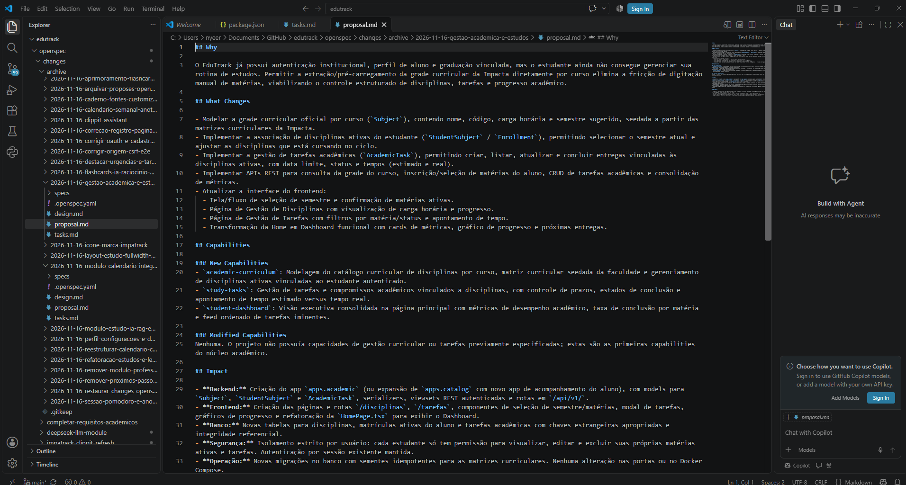
| Critério original | Evidência neste projeto | Status |
|---|---|---|
| Proposta criada no local correto | openspec/changes/archive/2026-11-16-gestao-academica-e-estudos | Atendido |
| Problema e escopo descritos | Seções Why e What Changes preenchidas | Atendido |
| Capacidades e impacto declarados | Seções Capabilities e Impact com módulos e riscos | Atendido |
| Proposta validada pela ferramenta | openspec validate --all aprovando os 23 itens | Atendido |
| Comando /openspec:proposal | Proposta escrita pelo CLI/agente, não por slash command do editor | Atendido por equivalente |
/openspec:proposal em um editor com essa extensão. Aqui a proposta foi escrita por CLI/agente seguindo o mesmo formato de artefatos, e validada com openspec validate.Construir as páginas principais do aplicativo, com assets organizados e navegação consistente entre elas.
frontend/public/: favicon, ícone da marca, imagem do Clippit e a galeria de 11 prints de CRUD.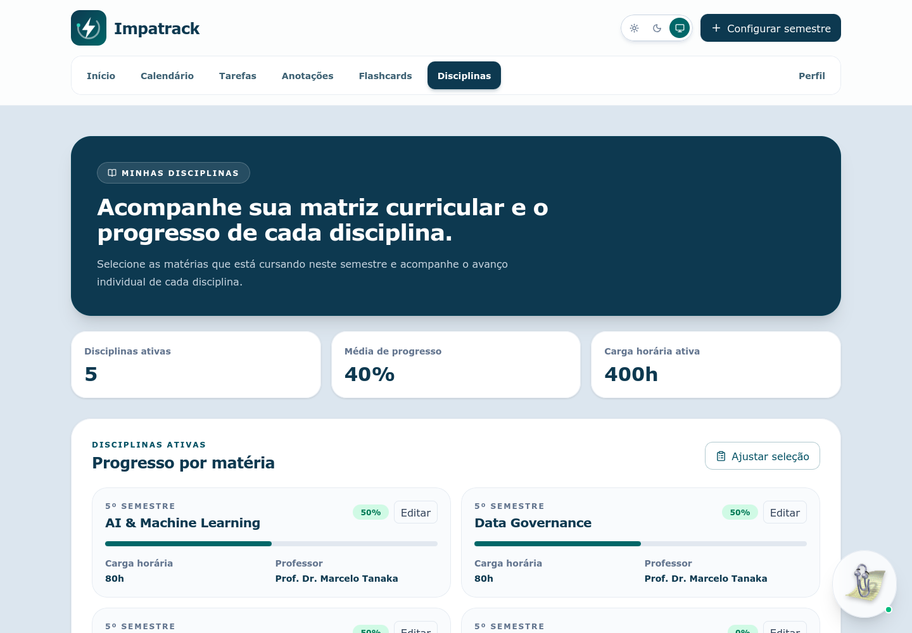
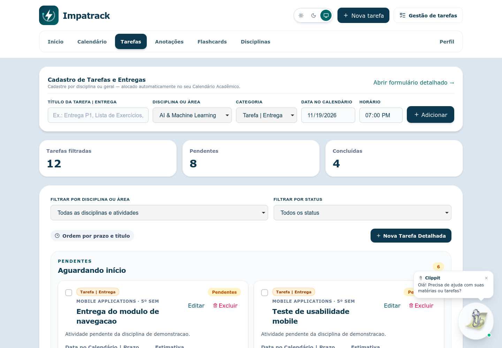
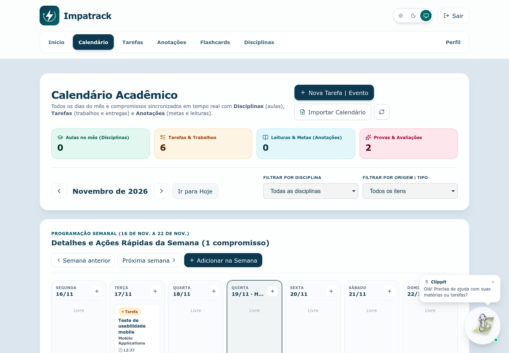
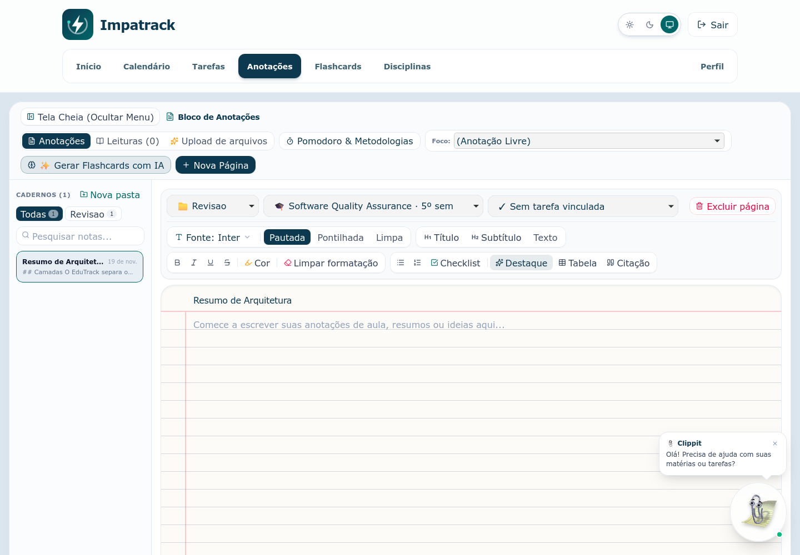
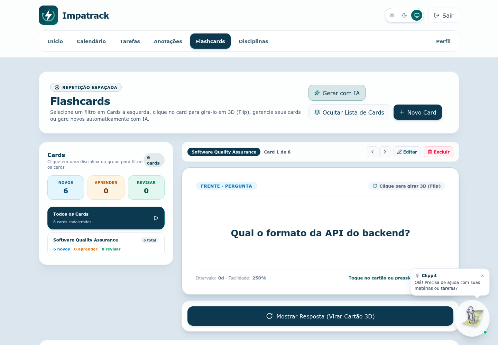
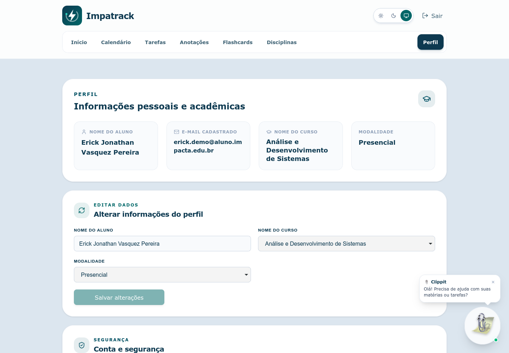
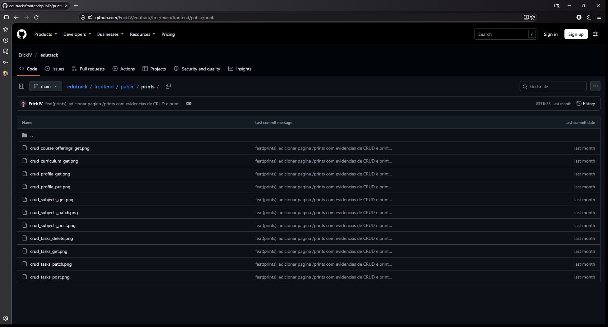
| Critério original | Evidência neste projeto | Status |
|---|---|---|
| Páginas principais criadas | Sete rotas implementadas e capturadas em execução | Atendido |
| Navegação entre páginas | AppNavigation presente em todas as telas internas | Atendido |
| Assets organizados | frontend/public/ com favicon, marca, clippit e prints | Atendido |
| Pasta assets/ na raiz do projeto | Não existe; os assets ficam em frontend/public/ | Atendido por equivalente |
assets/ na raiz do app. Neste projeto os assets estáticos do frontend ficam em frontend/public/, que é o diretório servido pelo Vite — mesmo papel, local diferente.Documentar em AGENTS.md as regras que qualquer agente ou pessoa deve seguir no repositório: arquitetura, segurança, contratos e fluxo de trabalho.
AGENTS.md na raiz com cinco seções: visão geral e arquitetura, regras de domínio e segurança, contratos de API e rotas, fluxo OpenSpec e convenções de Git/validação.filter(user=request.user)) e proibição de SQL concatenado, com validação de upload por assinatura binária.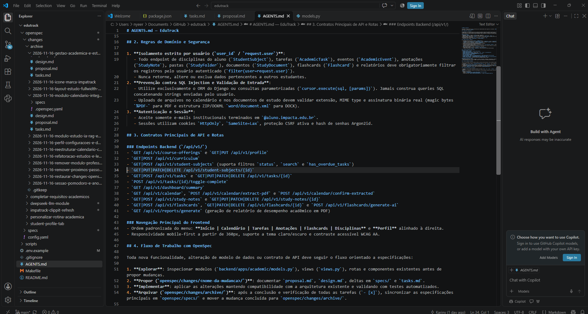
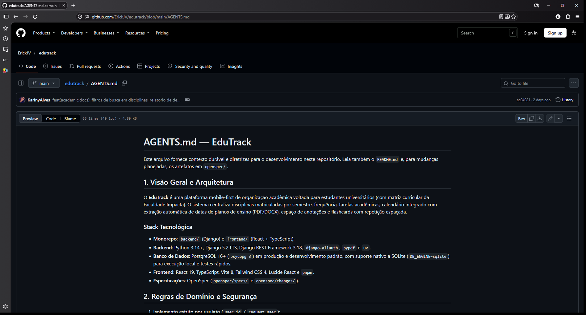
| Critério original | Evidência neste projeto | Status |
|---|---|---|
| Arquivo AGENTS.md na raiz | AGENTS.md versionado e referenciado no README | Atendido |
| Regras de segurança explícitas | Seção 2 com isolamento por usuário, SQLi e autenticação | Atendido |
| Contratos de API documentados | Seção 3 com os endpoints de /api/v1/ | Atendido |
| Fluxo de trabalho e validação | Seção 4 (OpenSpec) e seção 5 (Git e comandos) | Atendido |
| Teste do arquivo com chat Gemini | Não executado; não há extensão Gemini neste ambiente | Parcial |
Criar a tabela de tarefas acadêmicas com os campos necessários para prazo, status e tempo gasto, e expor o CRUD correspondente.
AcademicTask com user, student_subject, title, description, due_date, status, estimated_minutes, actual_minutes, completed_at, category e all_day.0012_academictask_all_day_academictask_category_and_more aplicada./api/v1/tasks e /api/v1/tasks/{id}, com ação toggle-complete.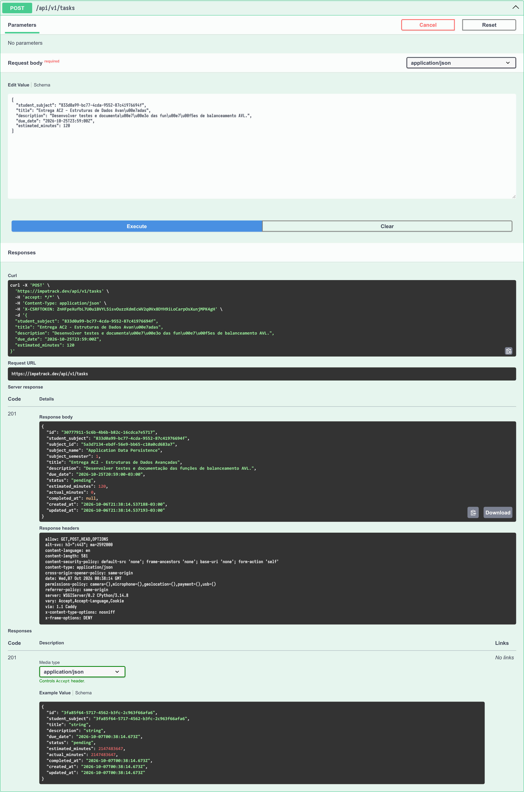
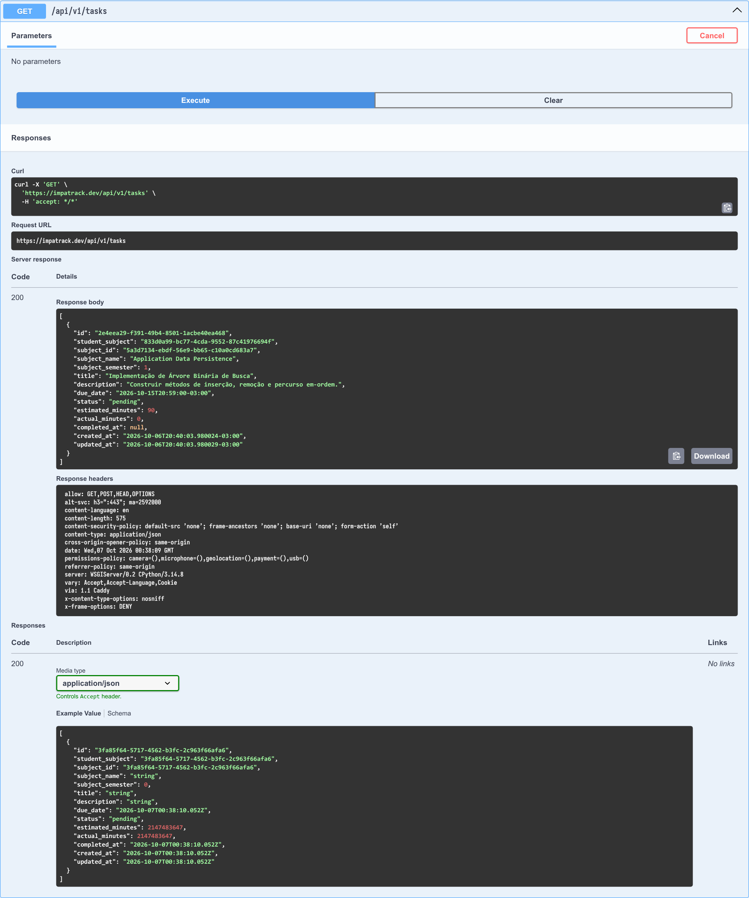
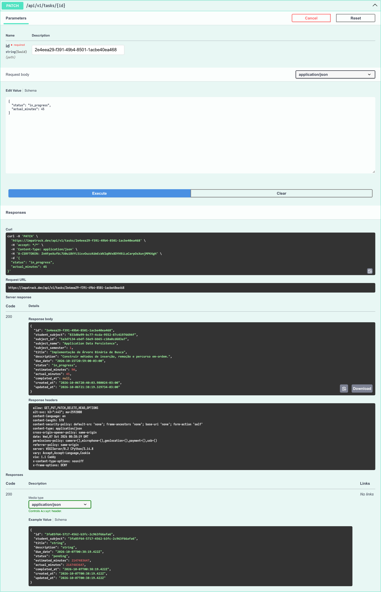
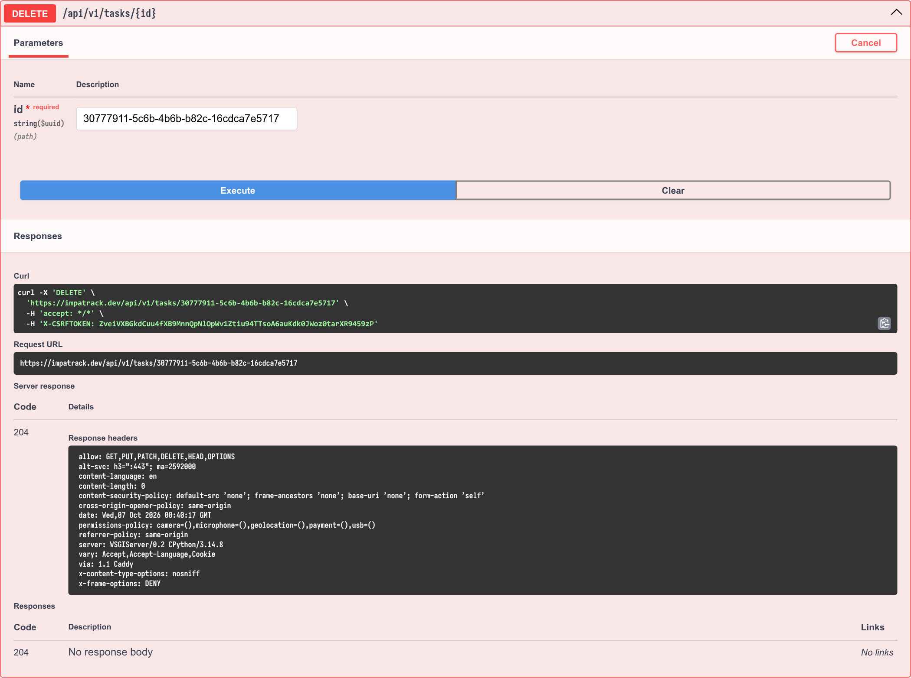
$ python manage.py showmigrations academic academic [X] 0001_initial [X] 0002_seed_curriculum [X] 0003_sync_impacta_official_curriculum [X] 0004_studentsubject_custom_workload_hours [X] 0005_professor_studentsubject_professor [X] 0006_migrate_legacy_professor_names [X] 0007_academicevent_academicterm_and_more [X] 0008_studyfolder_studynote [X] 0009_academicreading_studynote_reading_readinglog [X] 0010_classoccurrence_attendance_and_origin [X] 0011_flashcard [X] 0012_academictask_all_day_academictask_category_and_more [X] 0013_studydocument_studyquiz_studydocumentpage [X] 0014_rename_summary_ai_studydocument_analysis_cache_and_more
| Critério original | Evidência neste projeto | Status |
|---|---|---|
| Tabela de tarefas criada | Modelo AcademicTask com migração 0012 aplicada | Atendido |
| Campos de prazo, status e tempo | due_date, status, estimated_minutes, actual_minutes, completed_at | Atendido |
| CRUD disponível | GET/POST/PUT/PATCH/DELETE em /api/v1/tasks | Atendido |
| Registro visível no admin | AcademicTask registrada no admin; a folha de estilo do admin é bloqueada pelo CSP do projeto (middleware default-src 'none') | Atendido |
| Ferramenta Xano | Tabela modelada em Django ORM | Não aplicável |
Content-Security-Policy: default-src 'none' de edutrack/middleware.py bloqueia os assets do admin; por isso a evidência do CRUD vem da API e da galeria de prints.Escrever um script Python que calcule o progresso acadêmico por disciplina, tratando casos limite como ausência de tarefas.
scripts/calculate_progress.py com calculate_task_progress, que devolve total, concluídas, pendentes e percentual.total == 0, o progresso é 0.0.calculate_weighted_progress, que pondera o progresso pela carga horária de cada disciplina.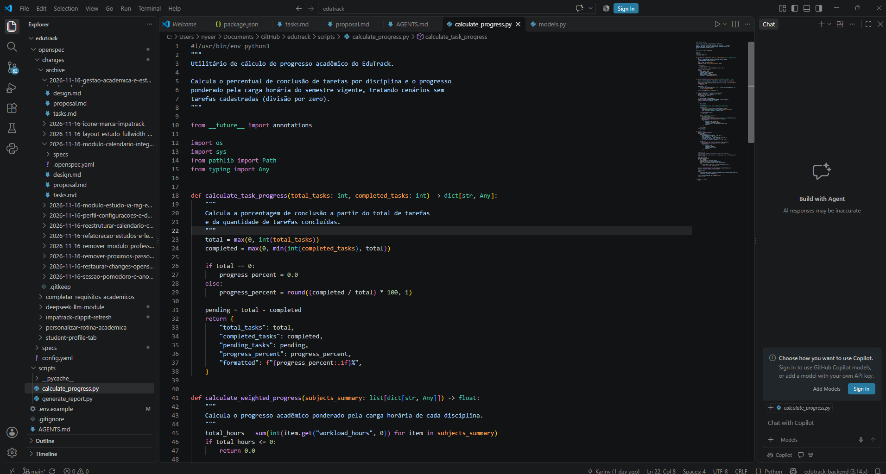
$ python ../scripts/calculate_progress.py ========================================================================== EDUTRACK - RELATORIO DE PROGRESSO DE TAREFAS POR DISCIPLINA ========================================================================== Disciplina | CH | Concl./Total | Progresso -------------------------------------------------------------------------- Agile Software Development | 80h | 4/5 | 80.0% Data Governance | 80h | 3/4 | 75.0% Distributed Systems & Cloud Computing | 80h | 4/6 | 66.7% Inovacao Lab - No/Low Code | 40h | 7/8 | 87.5% Artificial Intelligence Fundamentals | 80h | 0/0 | 0.0% -------------------------------------------------------------------------- Total Geral de Tarefas : 18/23 concluidas (78.3%) Progresso Ponderado CH : 59.0% ========================================================================== $ DJANGO_SETTINGS_MODULE=edutrack.settings python ../scripts/calculate_progress.py ========================================================================== EDUTRACK - RELATORIO DE PROGRESSO DE TAREFAS POR DISCIPLINA ========================================================================== Disciplina | CH | Concl./Total | Progresso -------------------------------------------------------------------------- AI & Machine Learning | 80h | 1/2 | 50.0% Data Governance | 80h | 1/2 | 50.0% Innovation Lab: SaaS Product | 80h | 1/2 | 50.0% Mobile Applications | 80h | 0/4 | 0.0% Software Quality Assurance | 80h | 1/2 | 50.0% -------------------------------------------------------------------------- Total Geral de Tarefas : 4/12 concluidas (33.3%) Progresso Ponderado CH : 40.0% ==========================================================================
$ python -c "from scripts.calculate_progress import calculate_task_progress as f; print(f(0,0)); print(f(10,7)); print(f(5,9))"
(0, 0) -> {'total_tasks': 0, 'completed_tasks': 0, 'pending_tasks': 0, 'progress_percent': 0.0, 'formatted': '0.0%'}
(10, 7) -> {'total_tasks': 10, 'completed_tasks': 7, 'pending_tasks': 3, 'progress_percent': 70.0, 'formatted': '70.0%'}
(5, 9) -> {'total_tasks': 5, 'completed_tasks': 5, 'pending_tasks': 0, 'progress_percent': 100.0, 'formatted': '100.0%'}
| Critério original | Evidência neste projeto | Status |
|---|---|---|
| Script Python funcional | python ../scripts/calculate_progress.py imprime a tabela por disciplina | Atendido |
| Percentual por disciplina | calculate_task_progress devolve progress_percent e formatted | Atendido |
| Tratamento de zero tarefas | f(0,0) retorna progress_percent 0.0, sem exceção | Atendido |
| Ponderação por carga horária | calculate_weighted_progress usa workload_hours de cada disciplina | Atendido |
Implementar o CRUD de disciplinas do aluno, incluindo remoção com baixa lógica e documentação dos endpoints.
GET|POST /api/v1/student-subjects e GET|PUT|PATCH|DELETE /api/v1/student-subjects/{id}.DELETE faz baixa lógica: o registro muda para status="dropped" e a resposta é 204 No Content.filter(user=user), onde user vem de self.request.user./api/docs/ e cada verbo evidenciado na galeria /prints.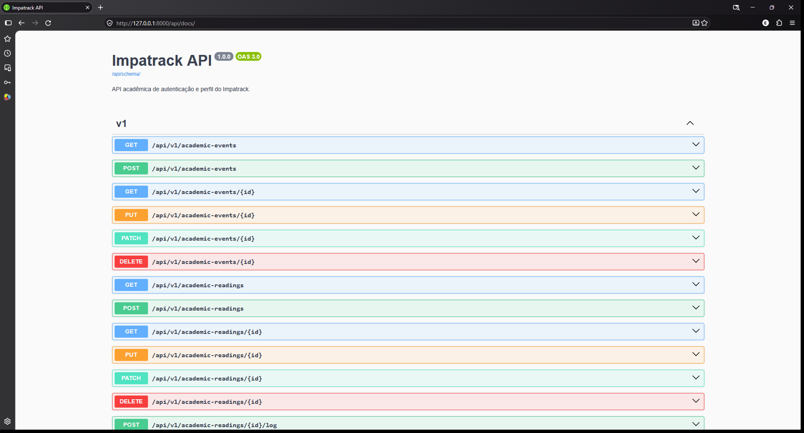
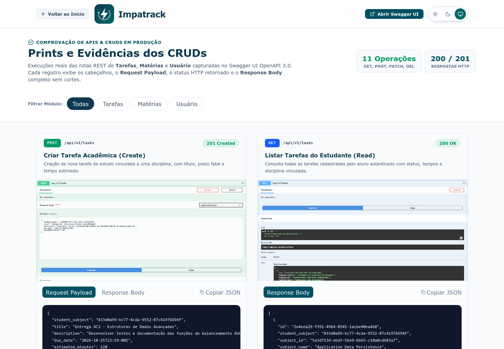
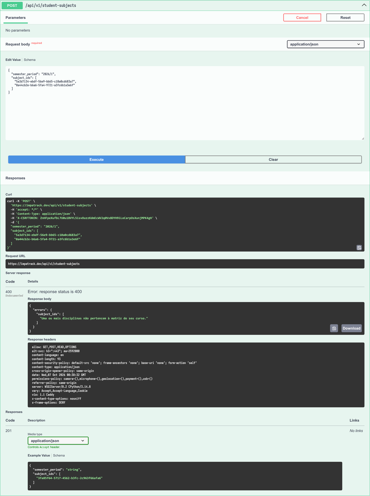
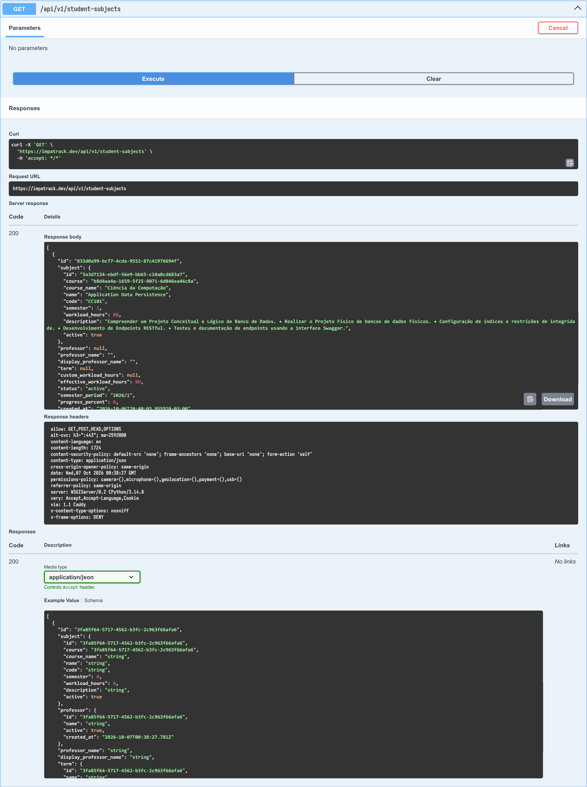
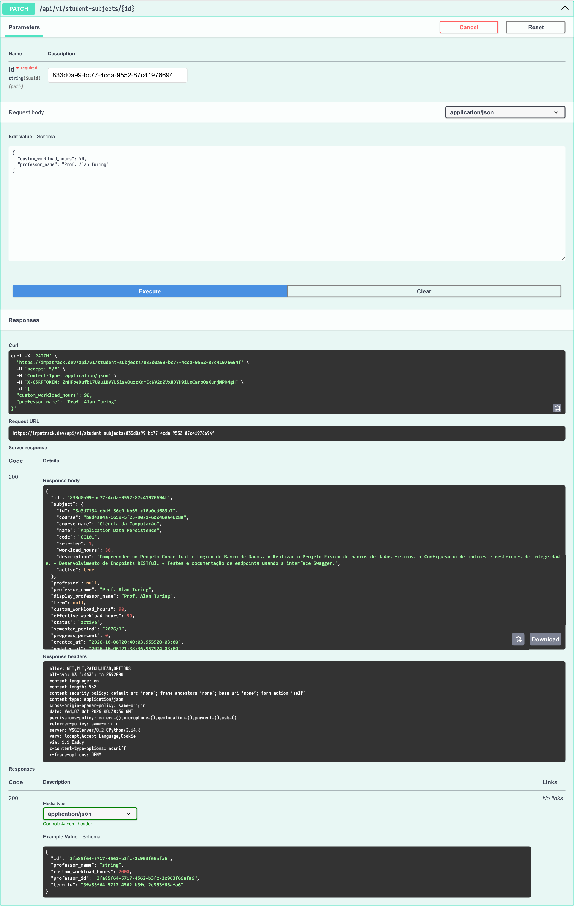
| Critério original | Evidência neste projeto | Status |
|---|---|---|
| Listagem e criação de disciplinas | GET e POST em /api/v1/student-subjects | Atendido |
| Detalhe, atualização e remoção | GET/PUT/PATCH/DELETE em /api/v1/student-subjects/{id} | Atendido |
| Baixa lógica na remoção | DELETE muda status para dropped e responde 204 (verificado no teste) | Atendido |
| Isolamento por usuário | filter(user=user) em todas as consultas da view | Atendido |
| Ferramenta Xano | Endpoints implementados em DRF | Não aplicável |
Permitir busca textual e filtros combinados nas disciplinas e tarefas, com resultado correto e previsível.
search e q filtram nome, código e professor da disciplina via icontains no ORM.has_overdue_tasks e overdue retornam apenas disciplinas com tarefa não concluída e prazo vencido./api/v1/tasks.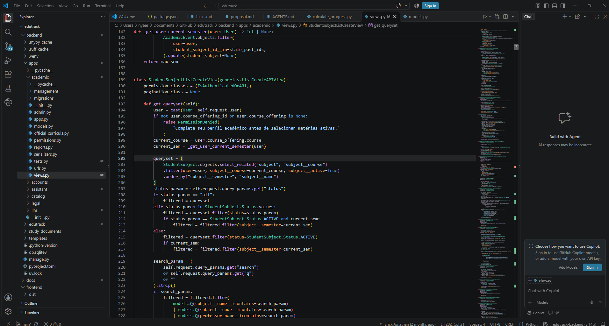
usuario autenticado: erick.demo@aluno.impacta.edu.br
======================================================================
GET /api/v1/student-subjects?search=Governance -> HTTP 200
itens retornados: 1
[
{
"id": "619bdfd0-3d18-43ad-8e78-20c78ea80c44",
"subject": {
"id": "93fee105-e9ac-4089-b4ba-29651d101a09",
"course": "575e1fff-48f8-5b8c-8a3f-72c79cef547f",
"course_name": "Análise e Desenvolvimento de Sistemas",
"name": "Data Governance",
"code": "ADS599",
"semester": 5,
"workload_hours": 80,
"description": "Disciplina do semestre de demonstracao.",
"active": true
},
"professor": null,
"professor_name": "Prof. Dr. Marcelo Tanaka",
"display_professor_name": "Prof. Dr. Marcelo Tanaka",
"term": {
"id": "5f14b66c-aec7-49d6-a5e2-c4d0d60f5f80",
"name": "2026/2",
"start_date": "2026-08-03",
"end_date": "2026-12-12",
"timezone": "America/Sao_Paulo",
"created_at": "2026-11-19T12:31:16.242588-03:00",
"updated_at": "2026-11-19T12:31:16.242601-03:00"
},
"custom_workload_hours": null,
"effective_workload_hours": 80,
"status": "active",
"semester_period": "2026/2",
"progress_percent": 50,
"created_at": "2026-11-19T12:31:16.265075-03:00",
"updated_at": "2026-11-19T12:31:16.265086-03:00"
}
]
======================================================================
GET /api/v1/student-subjects?has_overdue_tasks=true -> HTTP 200
itens retornados: 1
[
{
"id": "765160f3-04bb-4320-8bca-341401f3bb07",
"subject": {
"id": "fa0bd21c-e66b-5681-8df4-ef0d4b361275",
"course": "575e1fff-48f8-5b8c-8a3f-72c79cef547f",
"course_name": "Análise e Desenvolvimento de Sistemas",
"name": "Mobile Applications",
"code": "ADS503",
"semester": 5,
"workload_hours": 80,
"description": "Desenvolvimento de Aplicativos Móveis (Android). • Linguagem de Programação Dart. • Componentes Visuais de Aplicativo Mobile. • Aplicação Mobile com Armazenamento de Dados. • App Mobile com consumo de serviços na web e APIs.",
"active": true
},
"professor": null,
"professor_name": "Prof. Dr. Caio Bernardes",
"display_professor_name": "Prof. Dr. Caio Bernardes",
"term": {
"id": "5f14b66c-aec7-49d6-a5e2-c4d0d60f5f80",
"name": "2026/2",
"start_date": "2026-08-03",
"end_date": "2026-12-12",
"timezone": "America/Sao_Paulo",
"created_at": "2026-11-19T12:31:16.242588-03:00",
"updated_at": "2026-11-19T12:31:16.242601-03:00"
},
"custom_workload_hours": null,
"effective_workload_hours": 80,
"status": "active",
"semester_period": "2026/2",
"progress_percent": 0,
"created_at": "2026-11-19T12:31:16.256352-03:00",
"updated_at": "2026-11-19T12:31:16.256363-03:00"
}
]
======================================================================
GET /api/v1/tasks?search=Prova -> HTTP 200
itens retornados: 2
[
{
"id": "93f25a5e-24a9-4d8b-b329-ad4426b2f08f",
"student_subject": "c0fe0afe-7ce2-4e83-9f22-41a4249955d0",
"subject_id": "076c2c90-9307-5463-a6e7-d812f971f381",
"subject_name": "Software Quality Assurance",
"subject_semester": 5,
"category": "exam",
"title": "Prova AP1",
"description": "Atividade concluida da disciplina de demonstracao.",
"due_date": "2026-10-30T12:31:16.062382-03:00",
"end_date": null,
"all_day": false,
"room": "",
"status": "completed",
"estimated_minutes": 120,
"actual_minutes": 110,
"completed_at": "2026-10-30T15:31:16.062382-03:00",
"created_at": "2026-11-19T12:31:16.284498-03:00",
"updated_at": "2026-11-19T12:31:16.284504-03:00"
},
{
"id": "7fa0105f-0314-4035-9852-da5b43f71153",
"student_subject": "7713e5c5-1171-44c4-9d4b-7471887d3dcc",
"subject_id": "92d3f490-5f87-5069-ab65-fc9562cb5e60",
"subject_name": "AI & Machine Learning",
"subject_semester": 5,
"category": "exam",
"title": "Prova AP2",
"description": "Atividade planejada da disciplina de demonstracao.",
"due_date": "2026-11-25T12:31:16.062382-03:00",
"end_date": null,
"all_day": false,
"room": "",
"status": "pending",
"estimated_minutes": 120,
"actual_minutes": 0,
"completed_at": null,
"created_at": "2026-11-19T12:31:16.289782-03:00",
"updated_at": "2026-11-19T12:31:16.289788-03:00"
}
]
======================================================================
$ DB_ENGINE=sqlite python manage.py test apps.academic.tests.FlashcardsAndNotesQualityTests.test_advanced_search_and_pdf_report_generation -v 2
Found 1 test(s).
Creating test database for alias 'default' ('file:memorydb_default?mode=memory&cache=shared')...
Operations to perform:
Synchronize unmigrated apps: allauth, assistant, drf_spectacular, google, headless, llm, messages, rest_framework, staticfiles
Apply all migrations: academic, account, accounts, admin, auth, catalog, contenttypes, legal, sessions, sites, socialaccount, usersessions
Synchronizing apps without migrations:
Creating tables...
Running deferred SQL...
Running migrations:
Applying catalog.0001_initial... OK
Applying catalog.0002_seed_courses... OK
Applying contenttypes.0001_initial... OK
Applying contenttypes.0002_remove_content_type_name... OK
Applying auth.0001_initial... OK
Applying auth.0002_alter_permission_name_max_length... OK
Applying auth.0003_alter_user_email_max_length... OK
Applying auth.0004_alter_user_username_opts... OK
Applying auth.0005_alter_user_last_login_null... OK
Applying auth.0006_require_contenttypes_0002... OK
Applying auth.0007_alter_validators_add_error_messages... OK
Applying auth.0008_alter_user_username_max_length... OK
Applying auth.0009_alter_user_last_name_max_length... OK
Applying auth.0010_alter_group_name_max_length... OK
Applying auth.0011_update_proxy_permissions... OK
Applying auth.0012_alter_user_first_name_max_length... OK
Applying accounts.0001_initial... OK
Applying academic.0001_initial... OK
Applying academic.0002_seed_curriculum... OK
Applying academic.0003_sync_impacta_official_curriculum... OK
Applying academic.0004_studentsubject_custom_workload_hours... OK
Applying academic.0005_professor_studentsubject_professor... OK
Applying academic.0006_migrate_legacy_professor_names... OK
Applying academic.0007_academicevent_academicterm_and_more... OK
Applying academic.0008_studyfolder_studynote... OK
Applying academic.0009_academicreading_studynote_reading_readinglog... OK
Applying academic.0010_classoccurrence_attendance_and_origin... OK
Applying academic.0011_flashcard... OK
Applying academic.0012_academictask_all_day_academictask_category_and_more... OK
Applying academic.0013_studydocument_studyquiz_studydocumentpage... OK
Applying academic.0014_rename_summary_ai_studydocument_analysis_cache_and_more... OK
Applying account.0001_initial... OK
Applying account.0002_email_max_length... OK
Applying account.0003_alter_emailaddress_create_unique_verified_email... OK
Applying account.0004_alter_emailaddress_drop_unique_email... OK
Applying account.0005_emailaddress_idx_upper_email... OK
Applying account.0006_emailaddress_lower... OK
Applying account.0007_emailaddress_idx_email... OK
Applying account.0008_emailaddress_unique_primary_email_fixup... OK
Applying account.0009_emailaddress_unique_primary_email... OK
Applying sites.0001_initial... OK
Applying sites.0002_alter_domain_unique... OK
Applying accounts.0002_configure_site... OK
Applying admin.0001_initial... OK
Applying admin.0002_logentry_remove_auto_add... OK
Applying admin.0003_logentry_add_action_flag_choices... OK
Applying legal.0001_initial... OK
Applying legal.0002_seed_documents... OK
Applying sessions.0001_initial... OK
Applying socialaccount.0001_initial... OK
Applying socialaccount.0002_token_max_lengths... OK
Applying socialaccount.0003_extra_data_default_dict... OK
Applying socialaccount.0004_app_provider_id_settings... OK
Applying socialaccount.0005_socialtoken_nullable_app... OK
Applying socialaccount.0006_alter_socialaccount_extra_data... OK
Applying usersessions.0001_initial... OK
System check identified no issues (0 silenced).
test_advanced_search_and_pdf_report_generation (apps.academic.tests.FlashcardsAndNotesQualityTests.test_advanced_search_and_pdf_report_generation) ... ok
----------------------------------------------------------------------
Ran 1 test in 0.138s
OK
Destroying test database for alias 'default' ('file:memorydb_default?mode=memory&cache=shared')...
| Critério original | Evidência neste projeto | Status |
|---|---|---|
| Busca textual por disciplina | ?search=Governance retorna 1 disciplina (Data Governance) | Atendido |
| Filtro por tarefas atrasadas | ?has_overdue_tasks=true retorna 1 disciplina (Mobile Applications) | Atendido |
| Busca em tarefas | ?search= no endpoint de tarefas filtra título e descrição | Atendido |
| Cobertura por teste automatizado | test_advanced_search_and_pdf_report_generation: OK | Atendido |
| Campo de busca na interface de disciplinas | A interface não expõe campo de texto; o filtro está na API e no Swagger | Atendido por equivalente |
Gerar um relatório de desempenho acadêmico em PDF a partir dos dados do estudante, com um endpoint dedicado.
GET /api/v1/reports/generate devolve application/pdf iniciando com %PDF-.apps/academic/reports.py com apoio de pypdf, sem biblioteca de layout externa.docs/relatorio-desempenho-edutrack.pdf.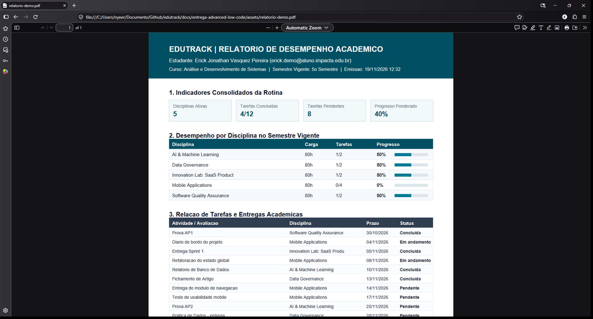
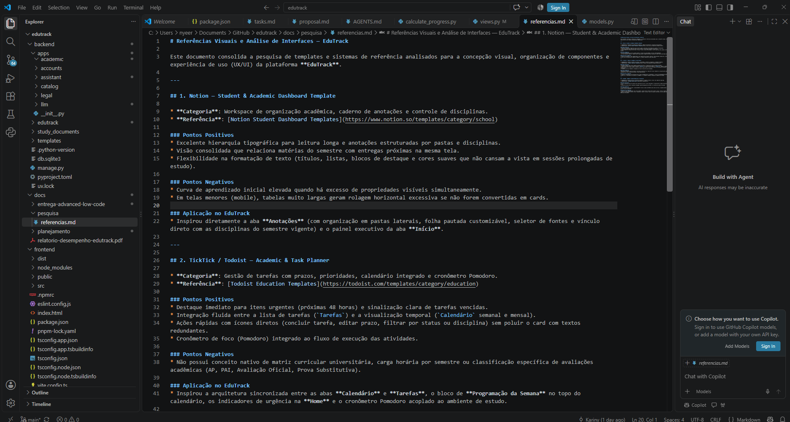
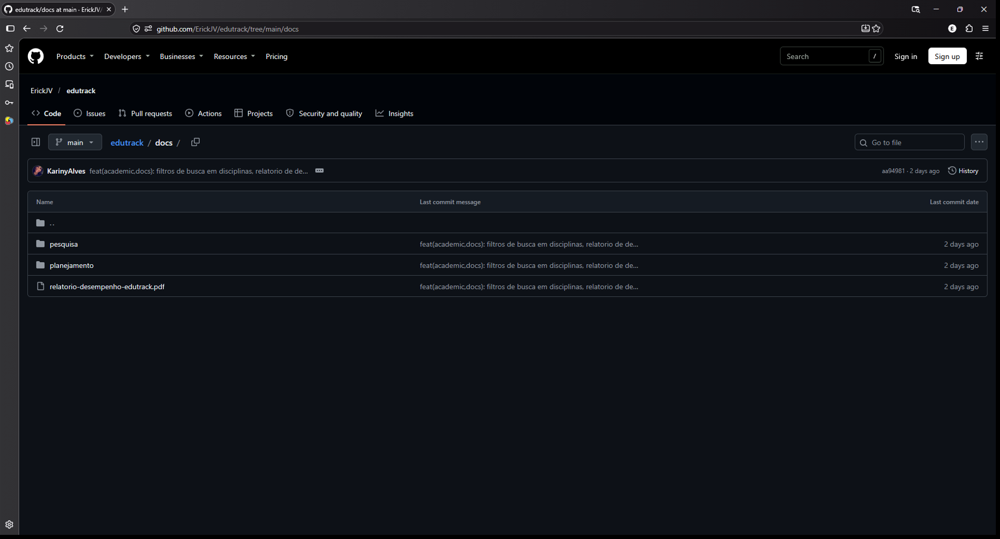
$ ls -lh docs/relatorio-desempenho-edutrack.pdf
-rwxrwxrwx 1 somebody somegroup 6.9K Nov 17 19:50 docs/relatorio-desempenho-edutrack.pdf
$ python -c "from pypdf import PdfReader; r = PdfReader('docs/relatorio-desempenho-edutrack.pdf'); print('paginas:', len(r.pages))"
incorrect startxref pointer(1)
parsing for Object Streams
paginas: 1
# O artefato versionado registra o relatorio de outro estudante; no documento
# de entrega e usado apenas como evidencia de existencia, sem exibir o conteudo.
$ head -c 8 docs/relatorio-desempenho-edutrack.pdf
%PDF-1.4
| Critério original | Evidência neste projeto | Status |
|---|---|---|
| Endpoint gera PDF | GET /api/v1/reports/generate responde application/pdf | Atendido |
| Arquivo PDF válido | Conteúdo inicia com %PDF-1.4 e é lido pelo pypdf | Atendido |
| Relatório com dados do estudante | Indicadores, tabela por disciplina e lista de tarefas | Atendido |
| Artefato versionado no repositório | docs/relatorio-desempenho-edutrack.pdf | Atendido |
| Biblioteca reportlab | Não usada; a geração é própria, apoiada em pypdf | Não aplicável |
Revisar o estado do repositório, validar as especificações e entregar o projeto com histórico e documentação coerentes.
openspec validate --all (23 aprovados, 0 falhas).main, em 2026-11-17.release/final-delivery; a entrega é feita por este documento e pelo repositório.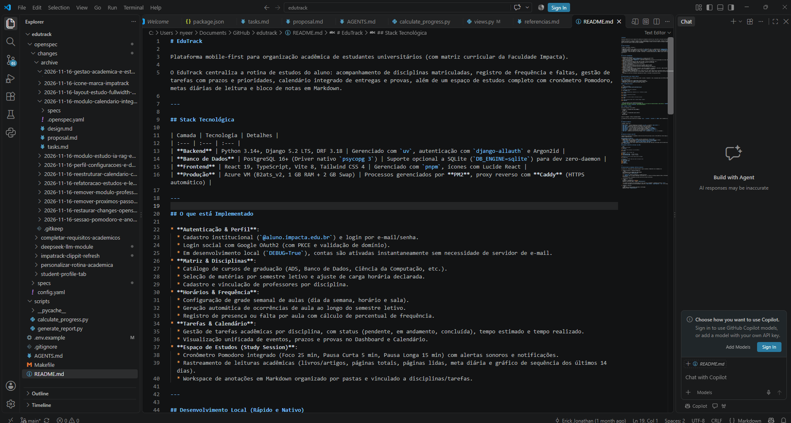
$ openspec validate --all 2>&1 | grep -E '^(✓|✗)|Totals' ✓ spec/academic-calendar ✓ spec/academic-curriculum ✓ spec/academic-reading ✓ change/acompanhar-boletim-configuravel ✓ spec/clippit-assistant ✓ change/completar-requisitos-academicos ✓ change/deepseek-llm-module ✓ spec/flashcards-and-calendar ✓ spec/flashcards-and-notes-quality ✓ spec/flashcards-notes-calendar ✓ spec/icone-marca-impatrack ✓ change/impatrack-clippit-refresh ✓ spec/inline-professor-management-only ✓ spec/perfil-configuracoes-e-dependabot ✓ change/personalizar-rotina-academica ✓ spec/restaurar-changes-openspec ✓ spec/social-auth-flow ✓ spec/student-dashboard ✓ spec/student-profile-management ✓ change/student-profile-tab ✓ spec/study-documents-rag ✓ spec/study-session ✓ spec/study-tasks Totals: 23 passed, 0 failed (23 items)
$ git log --merges --oneline -10 3d70f8c Merge pull request #52 from ErickJV/dependabot/pip/backend/gunicorn-27.0.1 6f1f84e Merge pull request #50 from ErickJV/dependabot/pip/backend/django-allauth-65.22.1 e51b899 Merge pull request #51 from ErickJV/dependabot/pip/backend/ruff-0.17.5 77b605e Merge pull request #48 from ErickJV/dependabot/pip/backend/mypy-2.4.1 845a4cc Merge pull request #53 from ErickJV/dependabot/npm_and_yarn/frontend/vite-8.3.8 7d219f7 Merge pull request #49 from ErickJV/dependabot/pip/backend/djangorestframework-stubs-3.18.2 ad71161 Merge pull request #54 from ErickJV/dependabot/npm_and_yarn/frontend/babel/preset-typescript-8.0.7 9ac8a6e Merge pull request #55 from ErickJV/dependabot/npm_and_yarn/frontend/globals-17.14.0 ffe81fd Merge pull request #47 from KarinyAlves/main 4d2819a Merge branch 'main' of https://github.com/ErickJV/edutrack $ git log --oneline -5 aa94981 feat(academic,docs): filtros de busca em disciplinas, relatorio de desempenho em PDF e documentacao do projeto (#56) cc03975 revert(calendario): mantém Programação Semanal antes da grade mensal 9e25fd3 style(clippit): restaura fins de linha LF nos arquivos tocados 2f87a5e feat(clippit): chave DeepSeek no servidor, marca Impatrack e calendário reordenado 198cedb update: brand and icons
| Critério original | Evidência neste projeto | Status |
|---|---|---|
| Especificações validadas no estado final | openspec validate --all: 23 itens, 0 falhas | Atendido |
| Documentação do projeto atualizada | README e AGENTS.md coerentes com o código | Atendido |
| Histórico de integração rastreável | PR #56 mergeado em 2026-11-17 | Atendido |
| Propostas pendentes declaradas | 6 changes em andamento listadas no Apêndice B | Parcial |
| Branch e PR de entrega final | Não existem; pendência declarada | Parcial |
Conteúdo completo do arquivo de diretrizes na raiz do repositório, sem resumo. É o documento que orienta pessoas e agentes no projeto.
# AGENTS.md — EduTrack
Este arquivo fornece contexto durável e diretrizes para o desenvolvimento neste repositório. Leia também o `README.md` e, para mudanças planejadas, os artefatos em `openspec/`.
## 1. Visão Geral e Arquitetura
O **EduTrack** é uma plataforma mobile-first de organização acadêmica voltada para estudantes universitários (com matriz curricular da Faculdade Impacta). O sistema centraliza disciplinas matriculadas por semestre, frequência, tarefas acadêmicas, calendário integrado com extração automática de datas de planos de ensino (PDF/DOCX), espaço de anotações e flashcards com repetição espaçada.
### Stack Tecnológica
- **Monorepo**: `backend/` (Django) e `frontend/` (React + TypeScript).
- **Backend**: Python 3.14+, Django 5.2 LTS, Django REST Framework 3.18, `django-allauth`, `pypdf` e `uv`.
- **Banco de Dados**: PostgreSQL 16+ (`psycopg 3`) em produção e desenvolvimento padrão, com suporte nativo a SQLite (`DB_ENGINE=sqlite`) para execução local e testes rápidos.
- **Frontend**: React 19, TypeScript, Vite 8, Tailwind CSS 4, Lucide React e `pnpm`.
- **Especificações**: OpenSpec (`openspec/specs/` e `openspec/changes/`).
## 2. Regras de Domínio e Segurança
1. **Isolamento estrito por usuário (`user_id` / `request.user`)**:
- Todo endpoint de disciplinas do aluno (`StudentSubject`), tarefas (`AcademicTask`), eventos (`AcademicEvent`), anotações (`StudyNote`), pastas (`StudyFolder`), documentos (`StudyDocument`), flashcards (`Flashcard`) e relatórios deve obrigatoriamente filtrar os registros pelo usuário autenticado (`filter(user=request.user)`).
- Nunca retorne, altere ou exclua dados pertencentes a outros estudantes.
2. **Prevenção contra SQL Injection e Validação de Entrada**:
- Utilize exclusivamente o ORM do Django ou consultas parametrizadas (`cursor.execute(sql, [params])`). Jamais construa queries SQL concatenando strings enviadas pelo usuário.
- Uploads de arquivos no calendário e nos documentos de estudo devem validar extensão, MIME type e assinatura binária real (magic bytes `%PDF-` para PDF e estrutura ZIP/OOXML `word/document.xml` para DOCX).
3. **Autenticação e Sessão**:
- Aceite somente e-mails institucionais terminados em `@aluno.impacta.edu.br`.
- Sessões utilizam cookies `HttpOnly`, `SameSite=Lax`, proteção CSRF ativa e hash de senhas Argon2id.
## 3. Contratos Principais de API e Rotas
### Endpoints Backend (`/api/v1/`)
- `GET /api/v1/course-offerings` e `GET|PUT /api/v1/profile`
- `GET|POST /api/v1/curriculum`
- `GET|POST /api/v1/student-subjects` (suporta filtros `status`, `search` e `has_overdue_tasks`)
- `GET|PUT|PATCH|DELETE /api/v1/student-subjects/{id}`
- `GET|POST /api/v1/tasks` e `GET|PUT|PATCH|DELETE /api/v1/tasks/{id}`
- `POST /api/v1/tasks/{id}/toggle-complete`
- `GET /api/v1/dashboard/summary`
- `GET /api/v1/calendar`, `POST /api/v1/calendar/extract-pdf` e `POST /api/v1/calendar/confirm-extracted`
- `GET|POST /api/v1/study-notes` e `GET|PUT|PATCH|DELETE /api/v1/study-notes/{id}`
- `GET|POST /api/v1/flashcards`, `GET|PATCH|DELETE /api/v1/flashcards/{id}` e `POST /api/v1/flashcards/generate-ai`
- `GET /api/v1/reports/generate` (geração de relatório de desempenho acadêmico em PDF)
### Navegação Principal do Frontend
- Ordem padronizada do menu: **Início | Calendário | Tarefas | Anotações | Flashcards | Disciplinas** e **Perfil** alinhado à direita.
- Responsividade mobile-first a partir de 360px, suporte a tema claro/escuro e contraste acessível WCAG AA.
## 4. Fluxo de Trabalho com OpenSpec
Toda nova funcionalidade, alteração de modelo de dados ou contrato de API deve seguir o fluxo orientado a especificações:
1. **Explorar**: inspecionar modelos (`backend/apps/academic/models.py`), views (`views.py`), rotas e componentes existentes antes de propor mudanças.
2. **Propor (`openspec/changes/<nome-da-mudanca>/`)**: documentar `proposal.md`, `design.md`, deltas em `specs/` e `tasks.md`.
3. **Implementar**: aplicar as alterações mantendo compatibilidade com a arquitetura existente e validando com testes automatizados.
4. **Arquivar (`openspec/changes/archive/`)**: após a conclusão e verificação de todas as tarefas (`- [x]`), sincronizar as especificações principais em `openspec/specs/` e mover a mudança concluída para `openspec/changes/archive/`.
## 5. Convenções de Código, Git e Validação
- **Commits**: utilize o padrão *Conventional Commits* em português (`feat:`, `fix:`, `docs:`, `refactor:`, `chore:`), com mensagens claras e objetivas.
- **Branches e Pull Requests**: desenvolva funcionalidades e correções mantendo o histórico limpo e verificável antes do merge na branch `main`.
- **Comandos de verificação**:
- Backend: `cd backend && uv run --no-sync python manage.py test apps.academic`
- Frontend: `cd frontend && pnpm typecheck && pnpm build`
- Scripts utilitários: `python scripts/calculate_progress.py` e `python scripts/generate_report.py`
O repositório mantém 23 propostas arquivadas em openspec/changes/archive/ e 6 mudancas em andamento em openspec/changes/, todas validadas por openspec validate --all.
| Change | Progresso das tarefas |
|---|---|
deepseek-llm-module | ✓ Complete |
impatrack-clippit-refresh | ✓ Complete |
personalizar-rotina-academica | 18/36 tasks |
completar-requisitos-academicos | 0/28 tasks |
acompanhar-boletim-configuravel | 0/23 tasks |
student-profile-tab | 0/6 tasks |
| # | Diretório em openspec/changes/archive/ |
|---|---|
| 1 | 2026-11-16-aba-meu-perfil-e-navegacao |
| 2 | 2026-11-16-aprimoramento-flashcards-anotacoes-calendario |
| 3 | 2026-11-16-arquivar-proposes-openspec |
| 4 | 2026-11-16-caderno-fontes-customizadas-color-picker-sidebar |
| 5 | 2026-11-16-calendario-semanal-anotacoes-e-flashcards-anki |
| 6 | 2026-11-16-clippit-assistant |
| 7 | 2026-11-16-correcao-registro-paginas-leitura-academica |
| 8 | 2026-11-16-corrigir-oauth-e-cadastro-social |
| 9 | 2026-11-16-corrigir-origem-csrf-e2e |
| 10 | 2026-11-16-destacar-urgencias-e-tarefas-vencidas |
| 11 | 2026-11-16-flashcards-ia-raciocinio-profundo-e-correcao-anotacao |
| 12 | 2026-11-16-gestao-academica-e-estudos |
| 13 | 2026-11-16-icone-marca-impatrack |
| 14 | 2026-11-16-layout-estudo-fullwidth-e-rich-textbook |
| 15 | 2026-11-16-modulo-calendario-integrado |
| 16 | 2026-11-16-modulo-estudo-ia-rag-e-simulados |
| 17 | 2026-11-16-perfil-configuracoes-e-dependabot |
| 18 | 2026-11-16-reestruturar-calendario-caderno-e-tarefas |
| 19 | 2026-11-16-refatoracao-estudos-e-leitura-academica |
| 20 | 2026-11-16-remover-modulo-professores |
| 21 | 2026-11-16-remover-proximos-passos-home |
| 22 | 2026-11-16-restaurar-changes-openspec |
| 23 | 2026-11-16-sessao-pomodoro-e-anotacoes-de-estudo |
Contratos declarados em AGENTS.md e implementados em backend/apps/academic/urls.py, servidos sob /api/v1/.
| Verbo e rota | Observação |
|---|---|
GET|POST /api/v1/curriculum | — |
GET|POST /api/v1/student-subjects | suporta filtros `status`, `search` e `has_overdue_tasks` |
GET|PUT|PATCH|DELETE /api/v1/student-subjects/{id} | — |
POST /api/v1/tasks/{id}/toggle-complete | — |
GET /api/v1/dashboard/summary | — |
GET /api/v1/reports/generate | geração de relatório de desempenho acadêmico em PDF |
Documentação interativa em /api/docs/ e schema OpenAPI em /api/schema/.
| Item | URL |
|---|---|
| Repositório | https://github.com/ErickJV/edutrack |
| Pull request final | https://github.com/ErickJV/edutrack/pull/56 |
| Diretrizes do projeto | https://github.com/ErickJV/edutrack/blob/main/AGENTS.md |
| Pesquisa de referências | https://github.com/ErickJV/edutrack/blob/main/docs/pesquisa/referencias.md |
| Proposta arquivada | https://github.com/ErickJV/edutrack/tree/main/openspec/changes/archive/2026-11-16-gestao-academica-e-estudos |
| Relatório versionado | https://github.com/ErickJV/edutrack/blob/main/docs/relatorio-desempenho-edutrack.pdf |
| Aplicação publicada | https://impatrack.dev |
Documento gerado a partir de 16 tarefas, 41 figuras e saídas literais de terminal capturadas durante a execução local do projeto.